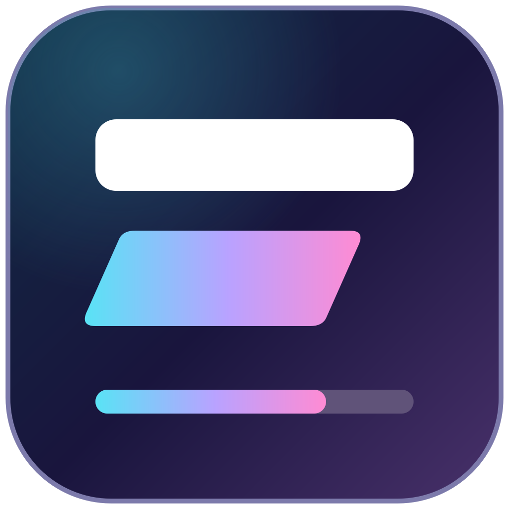

talk-deck-templateAI-first talks
Polished talks in hours. Not weeks.
Plain HTML decks your coding agent can build, restyle and fix, right up until you walk on stage.

talk-deck-templatePlain HTML decks your coding agent can build, restyle and fix, right up until you walk on stage.